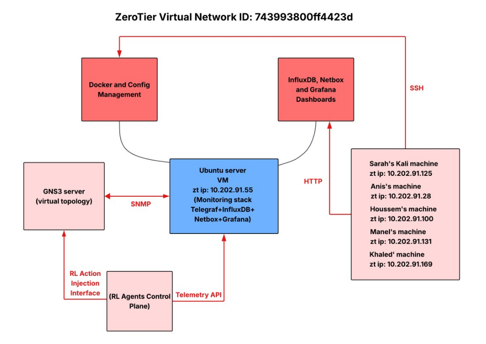
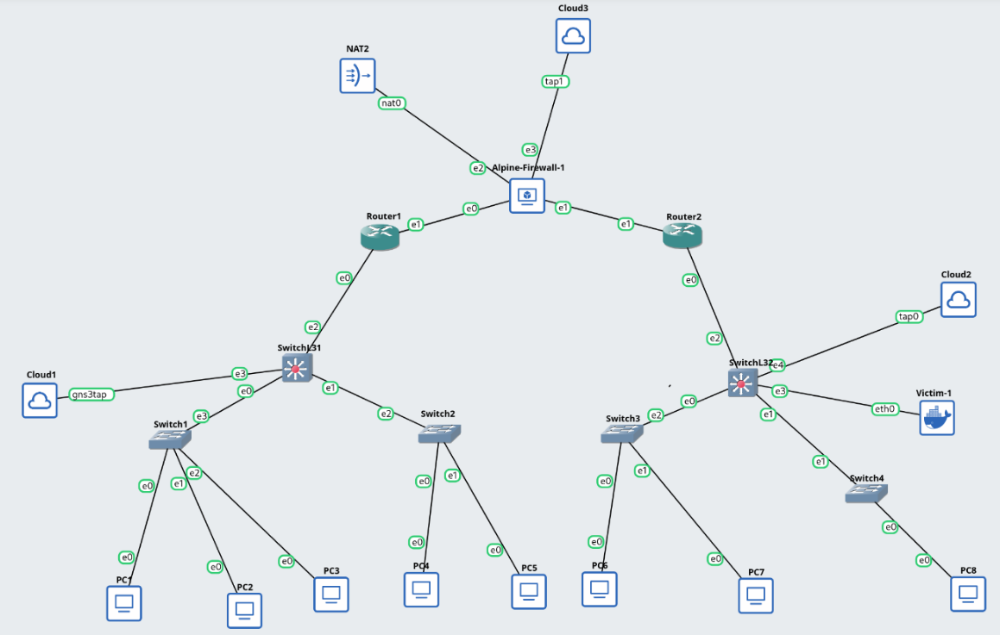
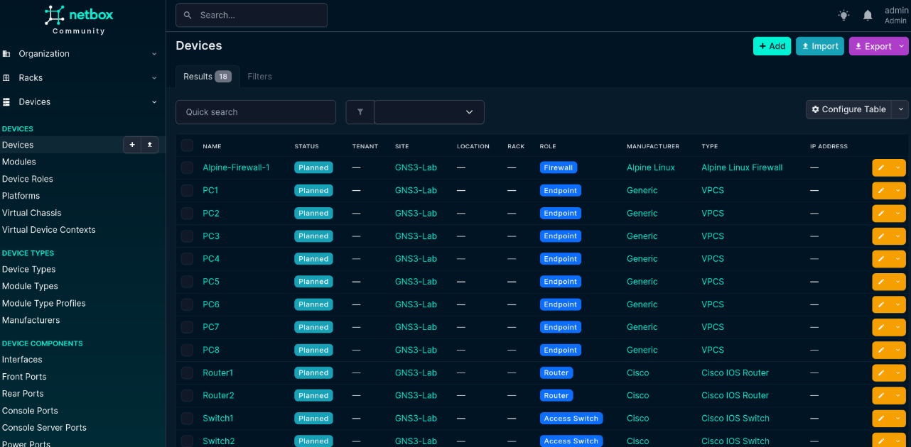
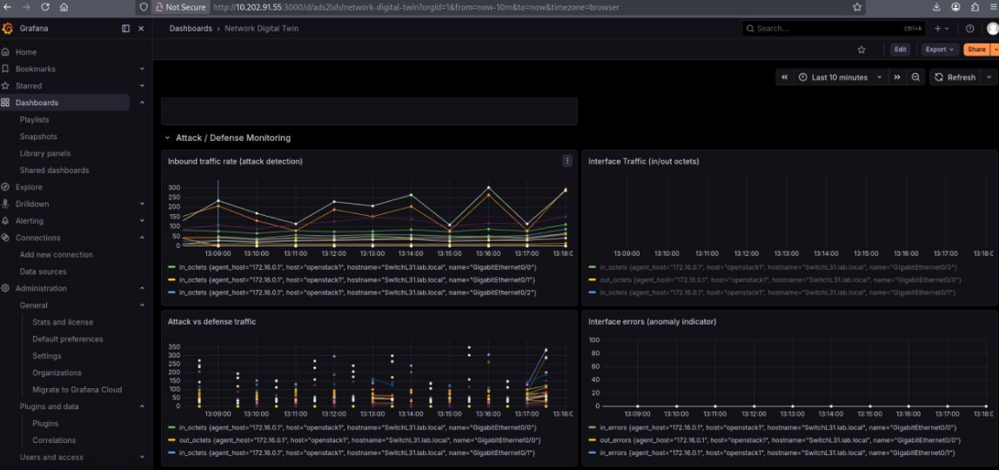
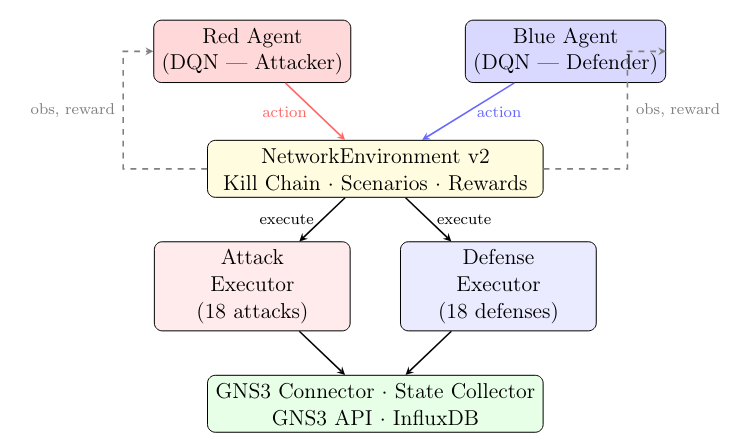

Building an AI-Powered Cybersecurity Gladiator Arena
How We Built a Self-Playing Cybersecurity Game in a Virtual Enterprise Network
TL;DR: We built a self-playing cybersecurity game where AI agents learn to attack and defend a virtual enterprise network. Red Agent vs Blue Agent. 18-node network. 5 VLANs. DQN self-play. It worked.
The Problem and The Solution
Traditional cybersecurity tools are reactive and rule-based. They're great at catching yesterday's attacks but often struggle against novel, adaptive threats. Meanwhile, enterprise networks are growing so complex that manual monitoring is no longer a viable option.
We decided to tackle these challenges head-on. We built a "Network Digital Shadow" — a live, virtual replica of an enterprise network — and populated it with two competing AI agents powered by Reinforcement Learning (RL).
The Red Agent acts as an autonomous attacker, learning to exploit vulnerabilities. The Blue Agent acts as the defender, learning to detect and block intrusions. They compete in a zero-sum game, making each other smarter over time. Here's how we did it.

The Gladiator Arena: Building the Enterprise Network
To create a realistic environment, we built a complex 3-tier enterprise network inside GNS3. This included a Core Firewall, Distribution Routers, Access Switches, and 8 PCs, all segmented across 5 different VLANs. We even set up OSPF dynamic routing to make it behave like a real corporate network.
A key challenge was making this network accessible to our entire team. We used ZeroTier to create a private virtual LAN, connecting all five of our machines across the internet. This allowed us to create a real external attack path, simulating an attacker trying to penetrate a corporate network from the outside.

The Watchtower: The Digital Shadow & Monitoring Stack
A network is useless without visibility. To create our "Digital Shadow", we implemented a full monitoring stack using Docker. The core components were:
- NetBox: Our source of truth for the network inventory. We built an auto-sync script that connects to the GNS3 API to automatically document every device, interface, and IP address.
- Telegraf & InfluxDB: Telegraf polls the network devices every 60 seconds via SNMP, collecting metrics like CPU usage, interface traffic, and errors. This data is stored in InfluxDB, a time-series database.
- Grafana: We used Grafana to build a comprehensive security dashboard, visualizing all the metrics in real-time. This gives both us and the Blue agent a clear view of the network's health.
We also integrated Ansible to automate configuration backups and state collection, ensuring the Digital Shadow perfectly mirrors the "physical" environment.


The Pre-Game Warm-Up: Manual Penetration Testing
Before unleashing our AI agents, we had to prove the network was vulnerable and establish a baseline. We conducted manual penetration testing from our Kali machine, targeting the "Victim-1" VM.
We ran a standard set of attacks:
- Reconnaissance:
nmap -sV(Discovered open SSH and HTTP ports). - Web Access:
curlandnikto(Found a vulnerable default Apache page). - SSH Brute Force:
hydra(Cracked the victim's weak password "123456" in just 16 seconds!). - Post-Exploitation:
ssh(Gained full shell access). - Denial of Service:
hping3(Launched a SYN flood, sending 7.5 million packets).
All five attacks succeeded. This confirmed our attack surface was valid and gave us concrete metrics to measure the RL agents' performance against.
A manual Hydra attack cracking the "victim" user's password "123456" in just 16 seconds. This established a baseline for the RL Red Agent to beat.
The Main Event: Training the Adversarial RL Agents
This is where the project gets really interesting. We designed our RL environment to be a complex, multi-faceted game. The agents don't just toggle links on and off; they execute semantically meaningful actions.
The Red Agent (The Attacker) — 18 Actions:
- Reconnaissance: Port Scan, Topology Mapping.
- Intrusion/Disruption: SSH Brute Force, MAC Flooding, DDoS Simulation.
- Persistence: Backdoor Creation, Config Tampering, Lateral Movement.
The Blue Agent (The Defender) — 18 Actions:
- Immediate: Port Isolation, Rate Limiting.
- Recovery: Restore Link, Config Restoration.
- Proactive: Honeypot Deployment, Anomaly Detection.
This isn't a game of "ping-pong." The agents learn a "Kill Chain." The Red agent must complete a sequence (Recon → Intrusion → Lateral Movement → Impact) to win a massive reward. The Blue agent must learn to interrupt this chain to win.
We used a Deep Q-Network (DQN) and a self-play training loop. Critically, the Blue agent uses Prioritised Experience Replay, forcing it to learn more from the times it's under attack.

Training logs showing the kill chain stage, agent rewards, and the specific attacks and defenses used, allowing for deep analysis of agent behavior.
The Results and The Impact
After training, the results were impressive. The agents demonstrated the ability to learn complex strategies. The Red agent began to chain reconnaissance actions before launching a major attack, mirroring real-world hacker tactics. The Blue agent learned to recognize the early signs of an attack and respond proactively, rather than just reacting to a network outage.
The project achieved all its major objectives:
- A fully operational, 18-node enterprise network in GNS3.
- A complete Digital Shadow with auto-synced inventory and a real-time monitoring dashboard.
- A sophisticated RL environment where two agents play a realistic, adversarial game of attack and defense.
| Metric | Result |
|---|---|
| Network Nodes | 18 |
| VLANs | 5 |
| Agent Actions (Each) | 18 |
| Training Episodes | 300 |
| Password Crack Time (Red Agent) | 16 seconds |
Conclusion & Future Work
We've proven that combining a Network Digital Shadow with Adversarial Reinforcement Learning is a viable and powerful approach to cybersecurity R&D. We built a platform where AI can safely learn to break and fix a network, developing strategies that rule-based systems would likely miss.
Future Work:
This is just the beginning. Next, we plan to:
- Integrate Real-World Tools: Have the Red agent directly call tools like
nmapandhydravia the GNS3 API for a more realistic simulation. - Add IDS/IPS: Incorporate Snort or Suricata alerts into the Blue agent's observation space to train it using standard security tools.
- Scale: Add an OPNSense firewall and more complex multi-zone scenarios.
By open-sourcing these learnings, we hope to contribute to a safer, more resilient digital future. The full technical report is available for those who want to dive into the granular details.